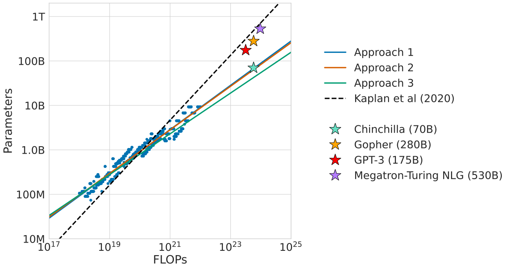
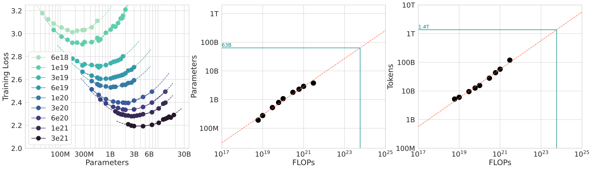
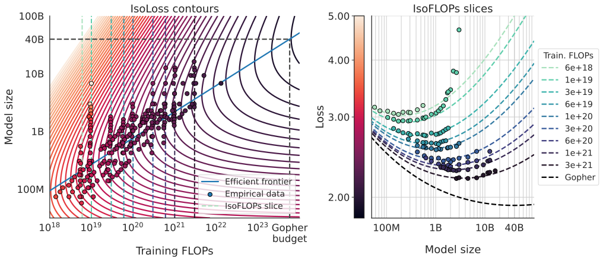
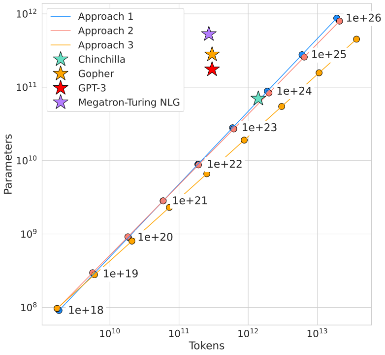
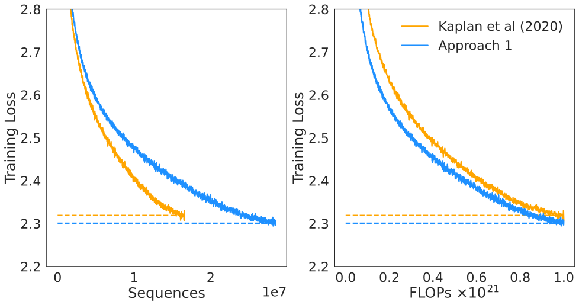

Chinchilla：固定训练 FLOPs 时，为什么模型参数和训练 Token 应该一起扩展
论文：Jordan Hoffmann et al., Training Compute-Optimal Large Language Models，2022。
类型：A · 原始经验方法论文；同时包含 70B Chinchilla 的高成本验证。
一句话定位：Chinchilla 不是“发现 20 tokens/parameter”这么简单。它真正重新定义的是一个受约束优化问题：给定固定训练 FLOPs (C)，模型参数量 (N) 与训练 token 数 (D) 应该怎样分配，才能得到最低 loss？ 作者用 training-curve envelope、IsoFLOP profiles、parametric loss fit 三套彼此不同的方法都得到相近结论：随着 compute 增长，(N) 与 (D) 应更接近同步扩展，而不是像 Kaplan 2020 的估计那样主要把新增 compute 用于增大模型。
这篇必须紧接 Kaplan Scaling Laws。
Kaplan 的长期贡献是：
语言模型的 loss 随模型、数据、compute 呈现稳定、可预测的经验 scaling relation。
Chinchilla 并没有否定这一点。
它修正的是更具体的一层：
固定训练 compute 时，模型规模与训练 token 的最优分配。
先把两篇论文的冲突写成最简形式。
Kaplan 2020 的经验估计：
Chinchilla 2022 的三种方法约得到：
这不是小数点差异。
假设 compute 增长：
Kaplan 大致建议：
Chinchilla-style equal scaling：
这会把整个旗舰模型规划推向完全不同的位置。
阅读导航
建议先读：
Kaplan Scaling Laws：理解 power law、(N,D,C)、critical batch 和 Kaplan 的 compute allocation；
Transformer：底层语言模型仍是普通 decoder Transformer；
AdamW：Chinchilla 最终模型相对 Gopher 的 recipe 变化之一；
Llama 3：现代 IsoFLOPs 设计的真实案例；
Qwen2.5：scaling law 继续扩展到 LR、batch 与 MoE。
本文重点解决：
Chinchilla 到底修正 Kaplan 什么，没有修正什么？
为什么固定 FLOPs 后 (N) 和 (D) 必须互相竞争？
为什么 (C\approx6ND) 会让“模型越大越好”失效？
Approach 1 的 training-curve envelope 在做什么？
Approach 2 的 IsoFLOP valley 为什么是最直观证据？
Approach 3 为什么要拟合： $\( L(N,D)=E+\frac{A}{N^\alpha}+\frac{B}{D^\beta}? \)$
怎样一步不省地用约束优化推出 (N_{\rm opt}(C))、(D_{\rm opt}(C))？
最优点为什么满足： $$ \alpha A N^{-\alpha}
\beta B D^{-\beta}? $$
三种方法为什么给出略不同 exponent，却仍支持同一个工程结论？
“20 tokens per parameter”从哪里来，为什么不能把它当普适常数？
70B / 1.4T Chinchilla 对 280B / ~300B Gopher 到底验证了什么？
为什么这个对照并不是纯粹的单变量 (N/D) ablation？
为什么更小、训练更充分的模型还会降低 inference 成本？
为什么现代 LLM 往往又远远超过 Chinchilla token ratio？
training-compute optimal、inference-optimal、data-limited optimal 到底怎样区分？
1. 先把问题写对：Chinchilla 研究的不是“模型多大最好”
如果没有约束，当然可以说：
更大模型 + 更多数据 + 更多 compute 往往更好。
但工程上 compute 是有限的。
假设总训练预算：
模型参数量：
训练累计处理 token：
dense Transformer 近似：
所以给定 (C) 后：
这意味着：
(N) 和 (D) 不是两个可以同时免费增大的变量。
模型越大，每个 token 越贵。
固定 compute 下，能够处理的 token 就越少。
所以真正问题是：
2. 固定 compute 后为什么天然存在一个“太大”和“太小”？
假设 (C) 固定。
模型太小
那么：
你可以给它很多 token。
但最终可能被模型容量限制：
模型太大
那么：
模型容量很强，但只看到少量数据：
所以固定 compute 下 loss 直觉上应呈：
Loss
^
| \ /
| \ /
| \_________/
| ↑
| optimal N
+----------------> Model Size
这就是 IsoFLOP valley 的第一性原理来源。
3. Chinchilla 为什么要重新研究 Kaplan？
Kaplan 已经研究 compute-efficient allocation。
它得到：
换句话说，compute 增长 10× 时，模型规模约增长：
processed token 仅增长：
于是 2020–2021 许多大模型研发自然形成：
参数不断增大，但 training tokens 长期停留在几百 billion 量级。
Chinchilla 论文列出的几个典型模型：
Model |
Parameters |
Training tokens |
|---|---|---|
LaMDA |
137B |
168B |
GPT-3 |
175B |
300B |
Jurassic-1 |
178B |
300B |
Gopher |
280B |
300B |
MT-NLG |
530B |
270B |
Chinchilla |
70B |
1.4T |
这张表本身就暴露了一个问题：
参数从 175B 增到 530B，但 token 仍然大致卡在 300B 左右。
Chinchilla 要问：
这些模型是不是其实“太大、训练太少”？
4. 原论文 Figure 1：三种方法都把最优点推向“小模型 + 更多 token”

原论文 Figure 1 的核心证据。三种不同方法得到的 compute-optimal 前沿都明显偏向比 Kaplan 预测更小的模型、更多的训练 token。图中的价值不是某个单点，而是三种估计方法在趋势上互相支持。
为什么需要三种方法？
因为 scaling-law fit 很容易被：
schedule；
interpolation；
model range；
loss function form；
outlier；
extrapolation；
影响。
如果三种完全不同的分析都得到相近结论，可信度会明显更高。
5. Chinchilla 做了多大的实验矩阵？
作者训练超过：
个 language models。
参数量大致：
training tokens：
这不是：
拿几个公开大模型 checkpoint 做回归。
而是主动控制：
和：
这使它比单纯观察行业模型更接近一个真正的 controlled scaling experiment。
6. 三种方法分别在问什么？
Approach 1：Training-Curve Envelope
问：
我已经训练了很多不同大小、不同 schedule 长度的模型。在任意 compute 预算 (C) 上，哪条训练曲线此时 loss 最低？
Approach 2：IsoFLOP Profiles
问：
固定某个最终 FLOP budget (C)，改变模型参数量 (N)，并让 token 数自动满足 (D=C/(6N))。哪一个 (N) 的最终 loss 最低？
Approach 3：Parametric Loss Model
问：
能否把所有实验点拟合成一个显式 (L(N,D))，然后直接解约束优化问题？
三者不是同一图重复三遍。
它们的误差来源不同。
7. Approach 1：从 training curve 上找“同 compute 最低点”
作者训练多个模型，每个模型又使用多个 cosine schedule horizon。
于是每个 run 都有：
随训练推进的曲线。
在任意 compute：
查看所有模型：
当前的 loss。
选择：
对应的模型大小就是该 compute 下的经验最优模型。
将不同 (C_i) 的最低点连起来，就是：
training-curve envelope。
8. 原论文 Approach 1 图怎样读？

左图包含不同参数规模与训练 horizon 的实际 loss curves；作者从这些曲线提取固定 compute 下的最小 loss envelope，再在中、右图拟合 optimal parameters 与 optimal tokens 随 compute 的 scaling。
它得到约：
和：
这已经和 Kaplan 的：
非常不同。
9. 为什么 Learning-Rate Schedule 会影响 scaling-law 结论？
这是 Chinchilla 对 Kaplan 的一个关键方法论批评。
假设一个模型计划训练：
tokens。
cosine LR schedule 也按 130B token 设计。
现在你在中途：
tokens 时读取 loss。
这时 learning rate 可能还很高。
所以当前 loss：
不等于：
如果一开始就计划只训练 20B tokens，并把 cosine schedule 在 20B 附近衰减完，最终能达到的 loss。
因此：
一条长训练曲线的中间点，不一定是“以该 compute 为最终预算”的最优训练结果。
Chinchilla 为不同 training horizon 匹配 schedule，减少这种偏差。
这被认为是 Kaplan 与 Chinchilla estimate 差异的重要原因之一。
10. 为什么这个问题如此隐蔽？
因为从形式上看：
确实是一个合法的 intermediate compute point。
但 optimization state 不只由：
决定。
还由：
LR schedule；
warmup；
decay endpoint；
batch；
optimizer state；
决定。
所以真正 loss 更像：
如果 recipe 没有针对目标 horizon 调整，就可能污染 scaling estimate。
11. Approach 2：IsoFLOP 为什么是最直观的 compute-optimal 实验？
固定：
对于不同 (N)，令：
比如：
小模型
则可训练很多 tokens。
大模型
则 token 数约少 10×。
每一个点严格使用同一总 FLOPs。
最后比较：
这就是：
真正让 model size 与 training tokens 在一个固定 budget 下直接竞争。
12. IsoFLOP curve 为什么应该有谷底？
固定 (C)。
当 (N) 很小时：
当 (N) 很大时：
太小：
所以 loss：
自然可能呈 U-shaped。
最小值：
这是 compute-optimal point。
13. 原论文 Approach 2：真正应该盯着左图 valley

原论文 IsoFLOP 图。左图在每个固定 FLOP budget 下扫描不同模型参数量，能看到清晰的 loss valley；中、右图再用这些 valley 的位置拟合 optimal (N) 与 (D) 随 compute 的变化。
Approach 2 得到：
这与 Approach 1 的：
高度接近。
14. IsoFLOP 比“模型越大 loss 越低”多了什么？
普通 scaling plot：
通常默认：
每个模型都给足了训练资源。
IsoFLOP 则强制：
所以它问：
如果额外模型容量必须用减少训练 token 来支付，这个交换还值不值？
这是完全不同的问题。
15. Approach 3：为什么还要拟合显式 (L(N,D))？
Approach 1/2 都依赖直接实验曲线。
但旗舰 scale 远超实验范围。
为了外推，需要一个连续函数：
论文提出：
这条公式是整个 Chinchilla 数学部分的核心。
但首先必须强调：
它是经验风险分解，不是从 Transformer 方程严格推出的自然定律。
16. 三项分别代表什么？
第一项：不可约 floor
直觉：
即使模型与数据都无限，真实文本仍存在不可约熵。
第二项：有限模型容量
当：
这一项：
第三项：有限训练数据/训练量
当：
这一项：
于是：
这比某些直接趋于 0 的简单 power law 更显式地保留 entropy floor。
17. 为什么用“加法”分解？
经验形式：
隐含一个近似：
model-capacity error 与 finite-data/training error 可以被视为两个可分的主要贡献。
现实中它们不一定严格独立。
模型大小会影响：
optimization dynamics；
sample efficiency；
representation learning。
所以：
未必真的严格 separable。
这就是为什么必须把它理解为：
能解释实验点并支持外推的 fitted ansatz。
而不是第一性定律。
18. 原论文 Approach 3 图：蓝线是什么？

左图展示拟合的 (L(N,D)) 等高线与 compute-efficient frontier；右图展示固定 FLOPs 的切片。蓝色前沿经过每条 iso-loss contour 上所需 FLOPs 最少的位置。
如果 loss contour 表示：
那么一条 contour 上不同点都达到类似 quality。
但训练 compute：
不同。
最优点就是：
在这条 quality contour 上，让 (ND) 最小。
反过来固定 compute，等价于找到：
该 compute hyperbola 与最低 loss contour 的切点。
19. 现在开始完整推导：固定 (C) 下怎样最小化 (\hat L(N,D))？
目标：
约束：
构造 Lagrangian：
接下来三个偏导一个不省。
20. 对 (N) 求偏导
最优点：
所以：
两边乘 (N)：
21. 对 (D) 求偏导
令 0：
两边乘 (D)：
22. 两个式子一对比，得到最优平衡条件
刚才：
以及：
因此：
这是比“20 tokens/parameter”更本质的式子。
它说：
最优点平衡的是两类 error contribution 的边际价值，而不是简单要求两个 error term 数值相等。
只有当：
时，才有：
23. 为什么这里出现 (\alpha) 和 (\beta)？
因为：
一个误差项虽然数值小，但如果 exponent 大，它对增加资源更敏感。
所以资源分配应该比较的是：
多投入一点参数 / token 能带来多少 marginal loss reduction。
这就是 (\alpha,\beta) 进入平衡条件的原因。
24. 用约束消掉 (D)
约束：
代入平衡条件：
右边：
于是：
乘：
得到：
所以：
两边开：
次方：
定义：
则：
其中：
25. 再推出 (D_{\rm opt}(C))
因为：
代入：
所以：
得到：
而：
定义：
于是：
并且：
这最后一个关系也可以直接从：
理解：
如果：
那么：
要与：
同阶，必须：
26. 方法三的 fitted exponent 到底是多少？
论文方法三拟合大约：
因此：
论文汇总时约写为：
所以方法三其实并不是严格：
但它仍然与 Kaplan 的：
存在明显差异。
27. 三种方法放在一起，真正结论是什么？
论文 Table 2：
方法 |
(N_{\rm opt}\propto C^a) |
(D_{\rm opt}\propto C^b) |
|---|---|---|
Approach 1 · training-curve envelope |
0.50 |
0.50 |
Approach 2 · IsoFLOP |
0.49 |
0.51 |
Approach 3 · parametric fit |
0.46 |
0.54 |
Kaplan 2020 |
0.73 |
0.27 |
不要把：
当成噪声然后机械平均。
更好的理解是：
不同方法的误差来源不同，但都把最优资源分配推向“参数与训练 token 大致同步增长”的区域。
所以强结论是趋势。
不是某个小数点后两位的 universal constant。
28. 为什么 Approach 3 更偏向 token？
Approach 3：
相比 0.5/0.5，更偏向：
论文讨论一个原因：
fitted frontier 在不同 compute regime 存在轻微 curvature。
方法三使用所有点做 global parametric fit，并用 Huber loss 处理 residual。
因此它对大尺度区域的权重与前两种直接 valley 方法不同。
这提醒我们：
scaling exponent 会依赖 fit model 和 observation window。
29. 为什么作者还要做 bootstrap interval？
如果只拟合一次得到：
我们不知道这个数字对：
采样 run；
noise；
outlier；
有多敏感。
论文通过 bootstrap 重采样实验数据，再重复拟合。
这给出 exponent 的经验区间。
目的不是证明“真实世界 exponent 就在这个 interval”。
而是评估：
在当前实验数据内，拟合有多稳定。
外推误差仍然是另一层问题。
30. “20 tokens per parameter”到底从哪里来？
很多人把 Chinchilla 压缩成：
每个参数训练 20 个 token。
这个数大致来自论文 compute-optimal frontier 中：
的局部经验比例。
例如：
论文 Approach 1 预测：
比值：
最终 Chinchilla：
所以：
于是“20 tokens/parameter”成为一个容易记忆的 shorthand。
31. 为什么 20 不能被当作自然常数？
因为真正理论形式是：
所以比例：
如果：
那么比例才与 (C) 无关。
但方法三：
比例会随 compute 改变。
另外 (G) 依赖：
这些又依赖：
data distribution；
tokenizer；
architecture；
optimizer；
training recipe。
所以：
不是普适物理常数。
更准确的记忆是：
在 Chinchilla 的 dense Transformer / MassiveText / 训练 recipe / 实验 scale 下，compute-optimal frontier 大致落在几十 tokens per parameter、且 (N) 与 (D) 近似等比例随 compute 扩展。
32. 原论文把 optimal tokens vs parameters 直接画出来了

原论文 appendix 中对三种方法的 optimal token / parameter 预测。它比“20 tokens/parameter”这一句更完整，因为它直接展示 ratio 随模型规模和方法估计变化。
真正应该学的是：
看前沿。
不是背一个 ratio。
33. 为什么 Chinchilla 认为当时的大模型普遍“undertrained”？
这里的 undertrained 是相对定义。
不是说：
GPT-3 没训练好，loss 还在乱跳。
而是：
在相同 training compute 下，存在另一个更小的模型，如果把节省下来的 per-token compute 用于处理更多 tokens，可以达到更低 loss。
也就是：
在：
相同约束下。
所以：
undertrained = 相对于 compute-optimal allocation，参数过大、token 过少。
34. 一个具体例子：为什么 280B Gopher 可能太大？
Gopher：
training tokens：
训练 compute 约：
Chinchilla 问：
如果 (C) 固定，我能不能把 (N) 减少，同时把 (D) 大幅增加？
最终：
模型参数：
更小。
训练 token：
更多。
粗略 product：
与：
处于相近数量级。
这就是同 compute 不同 allocation 的旗舰级实验。
35. 为什么最终选 70B，而方法三甚至预测约 40B？
三种方法在 Gopher compute 附近并非完全一致。
大致预测：
optimal model size 在 40B–70B 区域。
最终选择：
论文说明这同时考虑：
dataset；
computational efficiency；
实际训练工程。
这非常重要。
Scaling law 不应该被理解成：
fit 出 43.217B，就必须精确训练 43.217B。
现实选择仍需要考虑：
hardware topology；
model divisibility；
training throughput；
available data；
serving target。
所以 scaling law 给的是：
合理设计区域。
36. Chinchilla 为什么不是一个新 architecture？
Chinchilla 沿用 Gopher 的 dense Transformer 主线。
最终 70B：
80 layers；
64 attention heads；
key/value size 128；
(d_{\rm model}=8192)；
FFN size = (4d_{\rm model})。
所以论文的核心因果变量不是：
新 Attention。
而是：
allocation。
这也是为什么它应该被归为 A 类 scaling-method paper，而不是 B 类架构报告。
37. 但是 Chinchilla 和 Gopher 又不只差 (N,D)
这点必须非常严格。
除了：
280B → 70B；
~300B → 1.4T；
论文还改变：
Optimizer
Gopher：
Chinchilla：
Dataset mixture
都基于 MassiveText，但采样比例略有变化。
Tokenizer normalization
Chinchilla 修改 SentencePiece normalization，尤其改善数学/化学表示。
Optimizer precision
forward/backward 用 bfloat16，但 optimizer state 中保存 float32 weight copy。
所以：
Chinchilla vs Gopher 并不是一个严格只改变 (N,D) 的单变量实验。
38. 那 70B Chinchilla 的 flagship 对照还能证明什么？
它提供的是非常强的 system-level validation：
按新的 compute-optimal scaling law 选择明显更小、训练更久的模型，在接近同 training compute 下，可以获得非常强的下游表现。
但不能严格写成：
所有性能提升 100% 都由 70B/1.4T allocation 导致。
更强的 causal evidence 来自前面数百个 controlled scaling runs。
旗舰模型更像：
高成本外推验证。
39. 原论文对 Kaplan 做了直接小规模 head-to-head

原论文 appendix 在 (10^{21}) FLOPs 附近直接训练了 Chinchilla Approach 1 与 Kaplan scaling law 分别预测的模型规模。论文报告 Chinchilla 方法预测的较小模型取得更低最终 loss。
这是很重要的证据。
因为它不是：
拿两条回归线争论。
而是：
用两个 scaling law 给出不同训练配置，然后真的训练出来比较。
当然这个实验仍然只覆盖：
FLOP 级别，不是直接在所有未来 scale 验证。
40. 为什么 Chinchilla 的“equal scaling”会让模型显著变小？
假设 compute：
固定。
Kaplan：
Chinchilla：
当 (C) 很大时：
所以随着 compute budget 增加，两种建议会越来越分叉。
这解释为什么到了 Gopher 级 compute：
Chinchilla 建议的模型可以比当时常见旗舰小很多。
41. 为什么“小模型 + 更多 token”同时改善 inference economics？
训练 compute 近似相同：
但 inference 每 token 计算通常更直接随模型 active parameters 增长。
dense 模型粗略：
Chinchilla：
vs Gopher：
所以 inference 基础 compute 约有：
参数规模差异。
这带来：
更低 memory；
更低 decode compute；
更容易部署；
fine-tuning 更便宜。
因此：
compute-optimal pretraining allocation 还可能顺带改善 deployment cost。
42. 这为什么改变了“大模型越大越好”的产业直觉？
在 Chinchilla 前，常见思路：
更多训练 compute
→ 首先做更大参数模型
→ training tokens 大致固定
Chinchilla：
更多训练 compute
→ 参数 + token 都增加
→ 不要把 capacity 做大后却不给足训练
于是模型参数量不再是唯一“规模指标”。
更合理的是同时报告：
今天看一个模型只问：
几 B 参数？
已经远远不够。
43. 为什么今天很多模型又训练得远超 20 tokens/parameter？
例如现代小模型可能：
却训练：
tokens。
ratio：
这不代表 Chinchilla 被简单“推翻”。
最重要原因是目标函数变了。
Chinchilla 主要优化：
但产品可能优化：
如果模型必须是：
那么你无法把 compute 换成更大模型。
只能继续增加：
44. Training-compute optimal 和 fixed-model-size optimal
Chinchilla 问题
约束：
部署约束问题
固定：
求：
同时允许增加 training compute。
两个 optimization problem 不一样。
所以同一个 7B 模型训练 10T token 可能：
相对 Chinchilla training-compute optimum 是 overtrained，
但：
相对 7B deployment constraint 是合理的。
这也是 Llama 3 8B / 70B 策略的重要背景。
45. 为什么 inference-heavy 产品甚至应该“比 Chinchilla 更偏小模型”？
假设总成本：
其中 (Q) 是未来 inference query/token 规模。
如果：
非常大，
多花训练 compute 去让一个小模型更强，可能长期更划算。
也就是：
多花一次 training
→ 换更小 serving model
→ 每个用户 token 都省 compute
→ 大规模 serving 后摊薄训练成本
所以真实产品 optimum 可能是：
比纯 training-compute optimum 更“overtrain small models”。
46. 为什么数据质量会让 Chinchilla ratio 再次改变？
Chinchilla 的 (D) 是：
processed token count。
但 1 token 并不等价于另一 token 的学习价值。
如果数据质量更高：
同样 token 数可能带来更多有效学习。
如果大量 synthetic / duplicated / low-quality token：
所以更严格的模型应该考虑：
现代数据工程会改变：
quality-adjusted compute-optimal frontier。
这也是为什么 Llama 3 / Qwen2.5 不会机械套 2022 年 Chinchilla ratio。
47. Tokenizer 为什么也会改变“每参数多少 token”的意义？
假设两种 tokenizer：
Tokenizer A
平均：
Tokenizer B
平均：
同样原始文本字符量 (C_{\rm chars})：
所以：
但语义文本量可能相同。
因此：
tokens/parameter 不能脱离 tokenizer 解释。
48. 为什么 Chinchilla 的结果不能直接套到 MoE？
Dense Transformer：
还比较合理。
MoE：
每 token 只激活部分 experts。
此时：
更接近实际主计算。
但 model capacity 又与：
有关。
于是 compute-optimal problem 至少变成：
这解释了为什么 Qwen2.5 会单独做 MoE scaling experiments。
49. 为什么 context length 也会破坏简单 (6ND)？
如果 sequence length：
很大，
attention score compute：
变得不可忽略。
此时总训练 FLOPs 不再只由：
解释。
所以 long-context model 的 compute-optimal analysis 应加入：
这也是现代模型 scaling law 必须重新实测，而不能永远复用 Chinchilla 常数的原因。
50. 为什么 Chinchilla 的第三种 loss form 对现代 scaling 仍有启发？
最重要的不是这五个 fitted constants。
而是思维：
把性能下降拆成不同资源瓶颈的 contribution，再做 constrained optimization。
现代系统可以扩展成：
然后约束可能是：
这已经从 scaling law 进入真正的 system co-design。
51. 为什么三种方法比一个漂亮公式更重要？
如果论文只有 Approach 3：
别人完全可以质疑：
结论是不是你选这个函数形式选出来的？
但 Approach 1 不依赖这个 loss formula。
Approach 2 也不依赖。
结果：
方向一致。
所以论文最强的证据结构是：
method triangulation。
即不同 measurement / fitting path 指向同一个工程结论。
52. 为什么 IsoFLOP 是后来 Llama 3 最值得继承的方法？
Llama 3 重新使用类似 IsoFLOPs 思路。
原因很简单。
固定：
扫描：
直接观察 valley。
它比：
先假设复杂的 loss model，再求 optimum
少一层 modeling assumption。
所以在有足够训练 budget 时：
IsoFLOP profile 是非常直观的 empirical design tool。
53. 为什么大 compute 下 valley 会变平？
Llama 3 观察到大 compute regime 下，IsoFLOP minimum 周围比较平。
即：
附近，
多个不同 (N,D) 配置 loss 很接近。
这意味着：
compute-optimal scaling 往往给一个区域，而不是精确唯一点。
如果：
那么工程团队可以基于：
hardware；
inference cost；
data availability；
parallelism；
选择其中一个点。
这比“必须严格保持 20 tokens/parameter”更符合现实。
54. 原论文的 flagship 结果为什么仍然重要？
Scaling fit 是小模型实验。
真正风险是：
extrapolation 到 Gopher scale 后失效。
所以训练 70B Chinchilla 是一次昂贵的 sanity check。
它在多类：
language modeling；
MMLU；
reading comprehension；
common sense；
QA；
BIG-bench；
上表现很强。
这让：
“更小 + 更多 token”
不只停留在 low-loss proxy。
而是被带到大规模 downstream evaluation。
55. 但 benchmark 不是这篇论文最核心的证据
如果只记：
Chinchilla MMLU 比 Gopher 高。
就把论文读反了。
核心证据顺序应该是：
400+ controlled scaling runs
↓
three independent methods
↓
compute-optimal frontier
↓
70B / 1.4T flagship prediction
↓
train Chinchilla
↓
downstream validation
benchmark 是最后一层。
不是结论来源的第一层。
56. Chinchilla 真正修正 Kaplan 的原因可以压成什么？
最简洁地说：
Kaplan 高估了继续增大模型规模相对于继续增加训练 token 的 compute value。
但机制上不止一句。
Chinchilla 指出几个重要差异：
training horizon 与 LR schedule 应匹配；
使用更大的模型范围；
直接固定 FLOPs 扫描 model size；
通过三种方法交叉验证；
对大 compute frontier 重新拟合。
所以它是：
实验设计修正 + empirical re-estimation。
57. Kaplan 和 Chinchilla 其实共享哪些结论？
两者都认为：
57.1 Scaling 是可预测的
随资源变化有稳定趋势。
57.2 不应该只训练小模型到充分收敛
compute-optimal point通常在更大模型、更少 convergence 的区域。
57.3 model/data/compute 必须联合考虑
没有单一“模型越大越好”。
57.4 大规模训练应该先做小规模实验
旗舰 run 之前应先建立 empirical model。
真正冲突的是：
资源怎样分配。
58. 为什么 Chinchilla 也不是 scaling law 的终点？
因为 2022 以后又发生：
更强 tokenizer；
dedup/data filtering；
synthetic data；
MoE；
GQA/MLA；
longer context；
better optimizers；
low precision；
post-training；
inference-heavy economics。
这些都会改变：
所以正确继承 Chinchilla 的方式是：
重新实验、重新拟合、重新求 optimum。
不是永久背：
59. 从 Llama 3 回看 Chinchilla
Llama 3 405B 的 scaling-law 预测大约：
402B parameters；
16.55T tokens。
实际：
405B；
~15.6T tokens。
ratio：
已经不是 20。
为什么不矛盾？
因为：
tokenizer 不同；
data 不同；
model recipe 不同；
scale 更大；
fitting law 重新估计；
Llama 3 用自己的 IsoFLOP experiments。
真正继承的是：
compute-optimal design methodology。
60. 从 Qwen2.5 回看 Chinchilla
Qwen2.5 进一步把 scaling-law 实验用于：
并单独处理 dense 与 MoE。
这说明 scaling law 的现代化方向不是：
找一个永久模型大小公式。
而是：
建一个 empirical surrogate model，帮助预测昂贵 run 的设计参数。
61. 一个更现代的 training design objective
现实训练不只是：
还可能约束：
所以真正问题逐渐变成：
这是 Pareto optimization。
Chinchilla 是这个更复杂问题的经典二维起点。
62. 为什么这对本地部署模型尤其重要？
如果硬件只能接受：
你关心的不是：
在无限选择范围内 training-compute 最优模型是不是 20B。
你关心：
怎样把 7B 训练到在这个部署 envelope 下尽可能强。
所以：
distilled models；
long-trained small LMs；
domain-adapted models；
常常故意远超 Chinchilla ratio。
这不是“浪费 compute”。
而是优化另一个 constraint set。
63. 对具身智能有什么直接启示？
具身模型的训练资源至少包括：
policy parameters (N)；
offline trajectories (D)；
simulation steps；
real robot data；
image/video tokens；
action tokens；
world-model rollout；
environment interaction compute。
因此未来也需要问：
更多资源应该花在：
更大的 VLA？
还是：
更多 robot trajectory？
还是：
更强 world model？
还是：
更多 online interaction？
Chinchilla 的真正迁移价值不是 20 tokens/param。
而是：
把“模型规模 vs 数据规模”正式写成受约束资源分配问题，并通过小规模实验估计前沿。
64. 为什么机器人数据比文本更需要“quality-adjusted scaling”？
文本 token 成本已经不一致。
机器人 trajectory 更夸张。
一个 token 可能来自：
simulation；
teleoperation；
autonomous rollout；
failed trial；
synthetic trajectory；
real-world contact-rich episode。
它们的：
与：
差几个数量级。
所以具身 scaling law 更可能需要：
甚至：
Chinchilla 提供的是方法范式，而不是直接公式。
65. 为什么“训练数据越多越好”仍然不是 Chinchilla 的结论？
固定 (N) 时，增加 (D) 通常降低：
但每个 token 都有 compute cost。
固定：
无限增加 (D) 必然迫使：
所以 Chinchilla 不是：
多训练就完了。
而是：
参数容量与训练量之间存在 compute-constrained balance。
66. 为什么“模型越小越好”同样不是结论？
70B Chinchilla 打败 280B Gopher，不代表：
更小一定更强。
如果继续把：
减成 1B，
即使给很多 token，capacity term：
会变大。
compute-optimal point是 valley。
不是边界。
67. 为什么“同 FLOPs”也不等于“同真实训练成本”？
只是 theoretical FLOPs。
真实 wall clock 还取决于：
hardware utilization；
parallel efficiency；
communication；
batch；
checkpointing；
activation memory；
cluster failures。
小模型训练更多 tokens：
可能拥有更高 data-parallel throughput，
也可能：
需要更长 serial wall-clock。
所以实际工程 optimum 不只看 FLOPs。
68. 为什么数据 availability 会把 optimum 推离数学前沿？
假设 compute-optimal 预测：
但你只有：
如果重复 10 epochs：
是否等价？
不一定。
data reuse 可能带来：
overfitting；
diminishing returns；
memorization。
于是 constraint 变成：
这时最优 (N) 可能需要重新变大。
所以 data acquisition 是 scaling strategy 的一部分。
69. 为什么 Chinchilla 之后高质量数据成为更关键的壁垒？
如果 compute 增加时：
也要显著增长，
那么每一代更大训练 budget 都要求更多：
unique；
high-quality；
diverse；
data。
这直接推动后来：
dedup；
filtering；
synthetic generation；
quality classifiers；
domain balancing。
70. 为什么 modern synthetic data 让 Chinchilla 问题更复杂？
如果真实高质量 token 不够，可以生成 synthetic data。
但 synthetic data 的有效价值依赖：
teacher quality；
diversity；
verification；
filtering；
contamination；
mode collapse。
因此 raw (D) 不再充分。
可能需要：
于是 modern scaling law 逐渐从：
one-dimensional token count
转向：
data mixture optimization。
71. 论文最强的 causal evidence 到底是哪几层？
从强到弱可以这样理解。
第一层：Controlled scaling runs
大量 (N,D,C) 组合。
这是最直接证据。
第二层：三种独立分析一致
减少单一拟合形式造成的偏差。
第三层：Kaplan-predicted vs Chinchilla-predicted head-to-head
直接比较不同 scaling rule 的结果。
第四层：70B Chinchilla vs 280B Gopher
旗舰 scale system-level validation。
但这一层同时存在 optimizer/data/tokenizer 等差异。
所以 causal purity 反而不如前面的小规模 controlled experiments。
72. 论文哪些结论最不应该被过度扩张？
72.1 20 tokens/parameter 是永久最优比率
错误。
72.2 所有模型都应该严格 (N,D\propto C^{0.5})
错误。
72.3 Chinchilla 证明 architecture 不重要
错误。
72.4 更小模型一定比更大模型好
错误。
72.5 训练更多 token 永远有相同收益
错误。
72.6 同 FLOPs 就代表同 wall-clock / energy
错误。
73. “Compute-optimal”这个词本身要带约束读
说：
model A 是 compute-optimal。
必须继续问：
对哪个 compute？
training FLOPs？
wall-clock？
inference lifecycle？
active params？
total energy？
还要问：
在什么 model family / data / tokenizer / optimizer 下？
所以完整表述应该是：
在指定训练目标、数据与架构族下，对固定 pretraining FLOPs 的经验最优 (N,D) allocation。
这才严谨。
74. 一张图把 Kaplan → Chinchilla 的逻辑串起来
flowchart TD
K1["Kaplan: predictable scaling"] --> K2["N / D / C power laws"]
K2 --> K3["Compute allocation estimate"]
K3 --> K4["N ~ C^0.73<br/>D ~ C^0.27"]
K4 --> P["Industry trend:<br/>very large models / ~300B tokens"]
P --> Q["Chinchilla question:<br/>Are these models undertrained?"]
Q --> A1["Approach 1<br/>training-curve envelope"]
Q --> A2["Approach 2<br/>IsoFLOP profiles"]
Q --> A3["Approach 3<br/>parametric L(N,D)"]
A1 --> R["N,D roughly scale together"]
A2 --> R
A3 --> R
R --> C["70B / 1.4T Chinchilla"]
C --> V["Flagship validation"]
V --> M["Modern scaling methodology"]
75. 为什么这两篇论文应该成对学习？
只读 Kaplan：
容易留下“更多 compute 主要做更大模型”。
只读 Chinchilla：
容易把它记成“20 tokens/parameter”。
两篇一起读，才能建立真正的 scaling-law 方法论：
Empirical regularity
↓
Fit law
↓
Use law for budget decisions
↓
Build larger experiment
↓
Check extrapolation
↓
Recalibrate law
这才是科学闭环。
76. 从 Chinchilla 到 Llama 3：方法怎样进化？
Chinchilla：
固定 compute，直接找 (N,D) optimum。
Llama 3：
在自己的 tokenizer/data/model family 上重新做 IsoFLOP experiments。
还进一步预测：
所以 scaling law 从：
pretraining-loss planning
扩展成：
capability forecasting。
77. 从 Chinchilla 到 Qwen2.5：变量怎样继续扩展？
Qwen2.5 不只问：
还问：
而且 architecture 有：
dense；
MoE。
所以现代 scaling law 更像：
它已经越来越接近工业系统中的 design-space optimization。
78. 为什么 scaling law 不是“AI 玄学曲线拟合”？
一个合格 scaling-law 工作至少需要：
明确定义变量；
控制其他 bottleneck；
大量 experiment；
holdout / bootstrap / multiple methods；
明确 extrapolation range；
高尺度 validation；
记录 regime change。
如果只是：
拿 6 个公开模型参数量和 benchmark 分数画一条线，
那远远不是 Chinchilla 式 scaling analysis。
79. 为什么 Chinchilla 的思维很适合工程师？
因为它把一句模糊问题：
“模型该多大？”
改成：
subject to：
也就是标准约束优化。
一旦问题写成这样，就可以：
明确变量；
明确成本；
明确目标；
做 controlled experiment；
拟合 surrogate；
求 Pareto point。
这比“大家现在都做 70B，所以我们也做 70B”强得多。
80. 如果现在自己要做一个小规模 scaling study，流程应该是什么？
假设你准备训练 50M–1B 的小语言模型。
Step 1：固定 tokenizer / data / architecture family
避免混入太多变量。
Step 2：选多个 FLOP budget
例如：
Step 3：每个 budget 扫不同 (N)
自动令：
Step 4：让 schedule 匹配目标 horizon
避免把长 schedule 的中间点当最终结果。
Step 5：画 IsoFLOP curve
Step 6：拟合 valley location
得到：
Step 7：由 constraint 得 (D_{\rm opt}(C))
Step 8：留一个更大 compute 做外推验证
这就是 Chinchilla 方法最可复用的实验模板。
81. 为什么不要一开始就做超大 grid search？
Scaling law 本来的目的就是：
减少昂贵搜索。
所以实验设计应覆盖：
足够宽 model range；
足够多 compute budgets；
能看见 valley；
而不是每个点把所有 hyperparameter 都扫一遍。
否则小规模 scaling study 本身就变成不可承受的旗舰实验。
82. 最容易学错的十个地方
错法 1：Chinchilla = 20 tokens/parameter
太简化。
错法 2：Chinchilla 推翻 Kaplan scaling laws
没有；修正的是 compute allocation estimate。
错法 3：Approach 1/2/3 是同一公式重复验证
不是，测量与拟合路径不同。
错法 4：(E+A/N^\alpha+B/D^\beta) 是理论定律
不是，是 empirical ansatz。
错法 5：最优点要求两个 error term 相等
只有 (\alpha=\beta) 时才成立。
一般是：
错法 6：70B vs 280B 是严格单变量实验
不是，还存在 optimizer、data mixture、tokenizer 等差异。
错法 7：今天 7B 训练 10T token 就违反 Chinchilla
如果目标是 fixed inference size，并不矛盾。
错法 8：token ratio 可以跨 tokenizer 直接比较
不能。
错法 9：MoE 应该直接拿 total params 套 (6ND)
不合理，要考虑 active compute。
错法 10：compute-optimal 是一个永恒唯一点
它依赖目标、约束、architecture、data 与 scale。
83. 论文真正证明了什么？
比较稳妥的结论：
在论文研究的 dense autoregressive Transformer regime 内，当固定训练 FLOPs 时，存在明显的 model-size / token-count trade-off；
三种不同方法都估计 (N) 与 (D) 应比 Kaplan 2020 的建议更接近同步扩展；
直接 IsoFLOP experiments 能观察到 loss valley；
parametric (L(N,D)) fit 能给出可解析的 constrained optimum；
一个按新前沿选择的 70B/1.4T 模型在旗舰尺度上表现强，支持此前许多大型模型相对 training compute 而言训练 token 偏少的判断；
更小的 compute-optimal model 还具有 inference / fine-tuning 成本优势。
84. 论文没有证明什么？
20 tokens/parameter 是 universal；
所有未来模型的 exponent 都是 0.5；
Chinchilla recipe 是所有模型家族的最优 recipe；
MoE / multimodal / long-context 直接遵守同一 law；
所有 Chinchilla-Gopher downstream 差异都只由 token allocation 引起；
raw token count 足以描述 data quality；
training FLOPs optimum 等于 serving lifecycle optimum。
85. 两篇 Scaling Laws 专题最后应该留下什么？
Kaplan 留下：
模型、数据、compute 的性能关系可以被经验建模并外推。
Chinchilla 留下：
scaling law 的 coefficients 必须靠更好的 controlled experiment 持续校准；固定 compute 下，模型容量和训练量是互相竞争的资源。
组合起来：
而是：
86. 现在回看 Llama 3 的 405B 选择就不再抽象
Meta 做小规模 IsoFLOP runs：
固定 compute 下扫描模型规模。
找 valley。
再拟合：
外推到：
FLOPs。
得到约：
最终选择：
这就是 Kaplan → Chinchilla 方法论在现代旗舰模型上的直接延续。
87. 现在回看 Qwen2.5 的 scaling law 也更清晰
Qwen2.5 不是只问：
(N,D) 怎么分。
它问：
当 (N,D,\text{architecture}) 变化时，optimal LR / batch 又怎么变？
所以：
这说明 scaling study 的真正本质是：
为昂贵训练系统建立低成本 empirical surrogate。
88. 下一步应该下钻什么？
到这里，Llama 3 / Qwen2.5 暴露的 scaling-law 技术债已经闭环。
下一个仍然明确阻塞 Qwen2.5 长上下文理解的节点是：
YaRN / 长上下文位置外推。
Qwen2.5 中：
32K / 262K long-context training
+
YaRN
+
Dual Chunk Attention
↓
128K / 1M serving context
我们已经知道：
training length、position extrapolation、attention organization、runtime sparse inference 是四个不同层次。
所以下一组应转向：
RoPE extension；
position interpolation / NTK-aware scaling；
YaRN；
再回到 Qwen2.5 的 1M pipeline。
89. 最终自检
读完 Chinchilla，至少应该能回答：
Chinchilla 的主优化问题如何写？
为什么 (C\approx6ND) 让 (N,D) 互相竞争？
模型太小与模型太大分别受什么瓶颈？
Kaplan 的 0.73/0.27 意味着什么？
Chinchilla 为什么怀疑当时大型模型 undertrained？
Approach 1 training-curve envelope 怎样找 optimum？
为什么 target horizon 与 LR schedule 必须匹配？
为什么长 schedule 的中间点不能直接视为短 budget optimum？
Approach 2 IsoFLOP 如何构造？
为什么 IsoFLOP curve 会有 valley？
Approach 2 得到的 0.49/0.51 怎样解释？
Approach 3 为什么拟合： $\( E+A/N^\alpha+B/D^\beta? \)$
(E) 的意义是什么？
为什么这个 loss 是 empirical ansatz？
怎样完整写出 Lagrangian？
对 (N,D) 求导后为什么得到： $$ \alpha A N^{-\alpha}
\beta B D^{-\beta}? $$
为什么最优点不一定要求两个 error term 相等？
怎样推出： $\( a=\frac{\beta}{\alpha+\beta}, \quad b=\frac{\alpha}{\alpha+\beta}? \)$
为什么 (a+b=1)？
方法三为什么是约 0.46/0.54，而不是严格 0.5/0.5？
三种方法 exponent 不同为什么仍支持同一结论？
20 tokens/parameter 从哪里来？
为什么 20 不是 universal constant？
undertrained 在本文里是什么相对含义？
70B/1.4T 与 280B/~300B 的 compute trade-off 是什么？
为什么旗舰 Chinchilla vs Gopher 不是纯 (N,D) ablation？
哪一层 evidence 对 compute-allocation 因果更强？
为什么更小 compute-optimal model 还能降低 inference 成本？
为什么今天小模型会训练远超 Chinchilla ratio？
training-compute optimal 与 fixed-model-size optimal 有何不同？
为什么 inference-heavy workload 可能进一步偏向 smaller-overtrained model？
data quality 为什么会改变 raw token optimum？
tokenizer 为什么影响 tokens/parameter 可比性？
MoE 为什么不能直接用 total params 套 (6ND)？
long context 为什么让 (6ND) 变得更粗糙？
为什么 Llama 3 需要重新做自己的 IsoFLOPs？
Qwen2.5 怎样把 scaling law 扩展到 hyperparameters？
“compute-optimal”这个词为什么必须同时说明约束与 model family？
Kaplan → Chinchilla 的科学闭环是什么？
怎样自己设计一个小规模 IsoFLOP scaling experiment？
如果这些问题能回答，那么 Chinchilla 就不再是：
“70B 模型训练了 1.4T token。”
而是：
一个用多组 controlled experiments 重新估计固定训练预算下资源分配前沿，并通过旗舰模型验证外推的完整 scaling-law 方法。